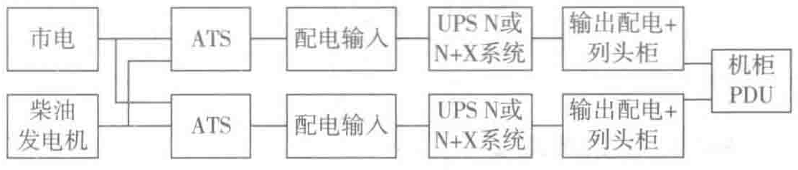
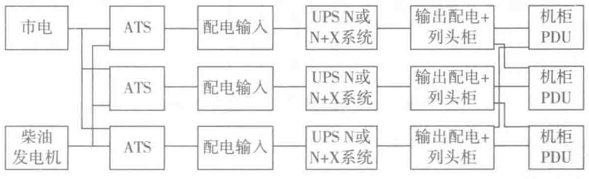

电器。
- 由树干式系统供电的配电箱，其进线开关宜选用带保护的开关，由放射式系统供电的配电箱，其进线可以用隔离开关。
2. 基本配电布置
配电布置常用形式包括集中式和分散式两种。
- 集中布置，用电负载采用放射式连接到供电电源。电缆适用于集中布置，逐点将用电设备或分配电盘用电缆采用放射式、星形联结方式连接到低压主配电盘。此方式的优点是各负载独立受电，一旦发生故障只局限于本身而不影响其他回路，供电可靠性高，控制灵活，易于实现集中控制。缺点是线路多，系统灵活性较差。这种配电方式适用于设备容量大、要求集中控制的设备、要求可靠性高的重要设备配电回路。
- 分散布置，用电设备或分配电箱采用汇流排连接到供电电源。汇流排槽系统适用于分散布置，采用树干式或链式向很多分散的负载供电，接线容易修改、移动和增加。
为获得最大的供电效益，两种配电模式可以灵活组合。备用供电及应急电源供电方式。为保证关键用电设备的供电可靠性，在系统方案设计时应考虑冗余的两路电网电源供电方式，必要时应考虑配备UPS和应急发电机等应急供电设备。
2.3.2 双总线配电架构介绍
数据中心常用的UPS不间断供电系统的基本类型有三种：“N”系统、并联冗余“N+1”系统以及并联冗余“2N”系统。本节主要介绍数据中心大多采用的并联冗余“2N”系统。
图2-8的配电架构是完全独立的最高可用级别的“2N”系统；图2-9的配电架构是以2N系统为拓扑进行基础优化后的配电架构，可称为“△2N”系统。


“2N”和“△2N”系统差异：相对于“2N”系统而言，“△2N”系统可选用容量较小